⇐Правило 2: Предпочитайте const, enum и inline использованию #define
Глава 1
Правило 3: Везде, где только можно используйте const
Замечательное свойство модификатора const состоит в том, что он накладывает определенное семантическое ограничение: данный объект не должен модифицироваться, - и компилятор будет проводить это ограничение н жизнь, const позволяет указать компилятору и программистам, что определенная величина должна оставаться неизменной. Во всех подобных случаях вы должны обозначить это явным образом, призывая себе на помощь компилятор и гарантируя тем самым, что ограничение не будет нарушено.
Ключевое слово const удивительно многосторонне. Вне классов вы можете использовать его для определения констант в глобальной области или в пространстве имен (см. правило 2). а также для статических объектов (внутри файла, функции или блока). Внутри классов допустимо применять его как для статических, так и для нестатических данных-членов. Для указателей можно специфицировать. должен ли быть константным сам указатель, данные, на которые он указывает, либо и то, и другое (или ни то, ни другое):
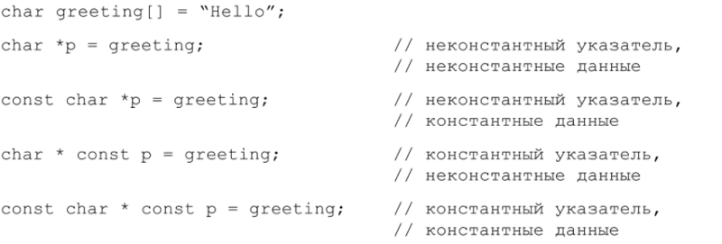Этот синтаксис не так страшен, как может показаться. Если слово const появляется слева от звездочки, константным является то, на что указывает указатель; если справа, то сам указатель является константным. Наконец, если же слово const появляется с обеих сторон, то константно и то. и другое.
Когда то, на что указывается, константа, некоторые программисты ставят const перед идентификатором типа. Другие - после идентификатора типа, но перед звездочкой. Семантической разницы здесь нет, поэтому следующие функции принимают параметр одного и того же тина:
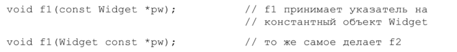Поскольку в реальном коде встречаются обе формы, следует привыкать и к той, и к другой.
Итераторы STL смоделированы на основе указателей, поэтому iterator ведет себя почти как указатель Т*. Объявление const-итератора подобно объявлению const-указателя (то есть записи Т* const): итератор не может начать указывать на что-то другое, но то, на что он указывает, может быть модифицировано. Если вы хотите иметь итератор, который указывал бы на нечто, что запрещено модифицировать (то есть STL-аналог указателя const Т*). то вам понадобится константный итератор:

Некоторые из наиболее интересных применений const связаны с объявлениями функций. В этом случае const может относиться к возвращаемому функцией значению, к отдельным параметрам, а для функций-членов - еще и к функции в целом.
Если указать в объявлении функции, что она возвращает константное значение, то можно уменьшить количество ошибок в клиентских программах, не снижая уровня безопасности и эффективности. Например, рассмотрим объявление функции operator* для рациональных чисел, введенное в правиле 24:
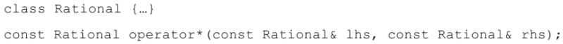Многие программисты удивятся, впервые увидев такое объявление. Почему результат функции operator* должен быть константным объектом? Потому что в противном случае пользователь получил бы возможность делать вещи, которые иначе как надругательством над здравым смыслом не назовешь
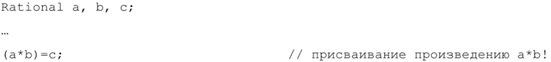Я не знаю, с какой стати программисту пришло бы в голову присваивать значение произведению двух чисел, но могу точно сказать, что иногда такое может случиться по недосмотру. Достаточно простой опечатки (при условии, что тип может быть преобразован к bool):
Такой код был бы совершенно некорректным, если бы а и Ь имели встроенный тин. Одним из критериев качества пользовательских типов является совместимость со встроенными (см. также правило 18). а возможность присваивания значения результату произведения двух объектов представляется мне весьма далекой от совместимости. Если же объявить, что operator* возвращает константное значение, то такая ситуация станет невозможной. Вот почему Так Следует Поступать.
В отношении аргументов с модификатором const трудно сказать что-то новое; они ведут себя как локальные константные const-объекты. Всюду, где возможно, добавляйте этот модификатор. Если модифицировать аргумент или локальный объект нет необходимости, объявите его как const. Вам всего-то придется набрать шесть символов, зато это предотвратит досадные ошибки типа «хотел напечатать — .а нечаянно напечатал -* (к чему это приводит, мы только что видели).
Константные функции-члены
Назначение модификатора const в объявлении функций-членов определить, какие из них можно вызывать для константных объектов. Такие функции-члены важны но двум причинам. Во-первых, они облегчают понимание интерфейса класса, ведь полезно сразу видеть, какие функции могут модифицировать объект, а какие нет. Во-вторых, они обеспечивают возможность работать с константными объектами. Это очень важно для написания эффективного кода, потому что, как объясняется в правиле 20. один из основных способов повысить производительность программ на C++ - передавать объекты по ссылке на константу. Но эта техника будет работать только в случае, когда функции-члены для манипулирования константными объектами объявлены с модификатором const.
Многие упускают из виду, что функции, отличающиеся только наличием const в объявлении, могут быть перегружены. Это. однако, важное свойство C++. Рассмотрим класс, представляющий блок текста:
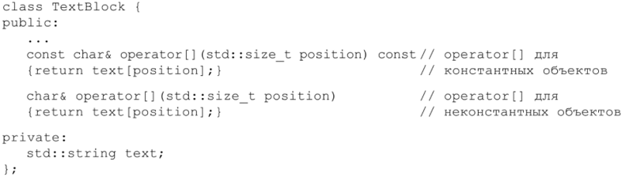Функцию operator[] в классе TextBlock можно использовать следующим образом:
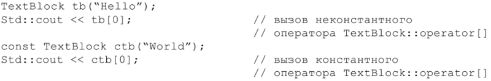Кстати, константные объекты чаще всего встречаются в реальных программах в результате передачи но указателю или ссылке на константу. Приведенный выше пример ctb является довольно искусственным. По вот вам более реалистичный:
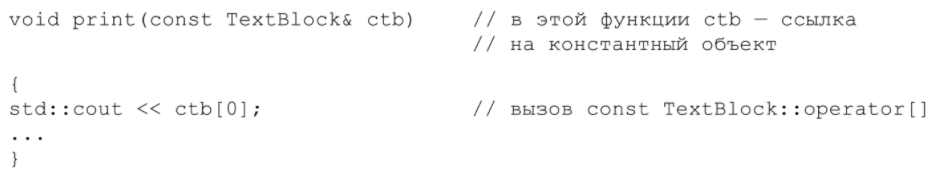Перегружая operator[] и создавая различные версии е разными возвращаемыми типами, вы можете по-разному обрабатывать константные и неконстантные объекты TextBlock:
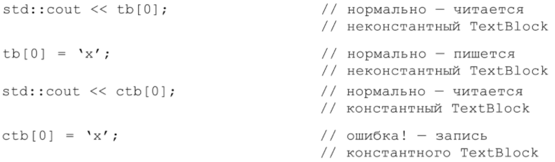Отметим, что ошибка здесь связана только с типом значения, возвращаемого operator[]; сам вызов operator[] проходит нормально. Причина ошибки - в попытке присвоить значение объекту типа const сһаг&, потому что это именно такой тип возвращается константной версией operator[].
Отметим также, что тип, возвращаемый неконстантной версией operator[]. - это ссылка на char, а не сам char. Если бы operator[] возвращал просто char, то следующее предложение не скомпилировалось бы:
tb(0) - 'х';
Это объясняется тем, что возвращаемое функцией значение встроенного типа модифицировать некорректно. Даже если бы это было допустимо, тот факт, что C++ возвращает объекты но значению (см. правило 20), означал бы следующее: модифицировалась копия tb.text[0], а не само значение tb.text[0]. Вряд ли это то, чего вы ожидаете.
Давайте немного передохнем и пофилософствуем. Что означает для функции-члена быть константной? Существует два широко распространенных понятия: побитовая константность (также известная как физическая константность) и логическая константность.
Сторонники побитовой константности полагают, что функция-член константна тогда и только тогда, когда она не модифицирует никакие данные-члены объекта (за исключением статических), то есть не модифицирует ни одного бита внутри объекта. Определение побитовой константности хорошо тем. что ее нарушение легко обнаружить: компилятор просто ищет присваивания членам класса. Фактически, побитовая константность - это константность, определенная в C++: функция-член с модификатором const не может модифицировать нестатические данные-члены объекта, для которого она вызвана.
К сожалению, многие функции-члены, которые ведут себя далеко не константно, проходят побитовый тест. В частности, функция-член, которая модифицирует то, на что указывает указатель, часто не ведет себя как константная. По если объекту принадлежит только указатель, то функция формально является побитово константной, и компилятор не станет возражать. Это может привести к неожиданному поведению. Например, предположим, что есть класс подобный Text- Block, где данные хранятся в строках типа char * вместо string, поскольку это необходимо для передачи в функции, написанные на языке С, который не понимает. что такое объекты типа string.
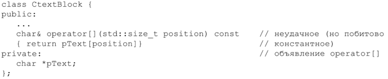В этом классе функция operator[] (неправильно!) объявлена как константная функция-член, хотя она возвращает ссылку на внутренние данные объекта (эта тема обсуждается в правиле 28). Оставим это пока в стороне и отметим, что реализация operator[] никак не модифицирует pText. В результате компилятор спокойно сгенерирует код для функции operator[]. Ведь она действительно является побитово константной, а это все, что компилятор может проверить. Но посмсприте, что происходит:
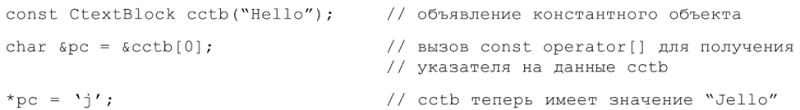Несомненно, есть что-то некорректное в том, что вы сюадаете константный объект с определенным значением, вызытете для него только константную функцию-член и тем не менее изменяете его значение!
Это приводит нас к понятию логической константности. Сторонники этой филосскрии утверждают. что функции-члены с const могут модифицировать некоторые биты вызвавшего их объекта, но только так, чтобы пользователь не мог этого обнаружить. Например. ваш класс CTextBlock мог бы кэшировать длину текстового блока при каждом запросе:
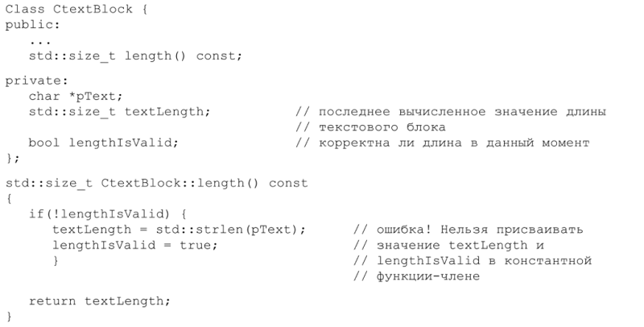Эта реализация length(), конечно же, не является побитово константой, поскольку может модифицировать значения членов textLength и lengthIsValid. Но в то же время со стороны кажется, что константности обьектов CTextBlock это не угрожает. Однако компилятор не согласен. Он настаивает на побитовой кoнстантности. Что делать?
Решение простое: используйте модификатор mutable. Он освобождает нестатические данные-члены от ограничений побитовой константности:
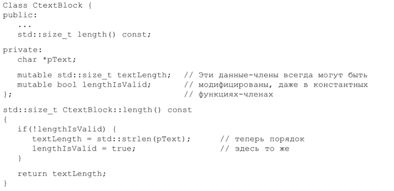Как избежатъ дублирования в константных и неконстантных функциях-членах
Использование mutable – замечательное решение проблемы, когда побитовая Константность вас не вполне устраивает, но оно не устраняет всех трудностей, связанных с соnѕt. Например, представьте, что operatorв классе TextBlock (и СTextBlock) не только возвращает ссылку на соответствующий символ, но также проверяет выход за пределы массива, протоколирует и нформацию о доступе и, возможно, даже проверяет целостность данных. Помещение всей этой логики в обе версии функции operator[] – константную и неконстантную (даже если забыть, что теперь мы имеем необычно длинные встроенные функции – см. правило 30) — приводит к такому вот неуклюжему коду:
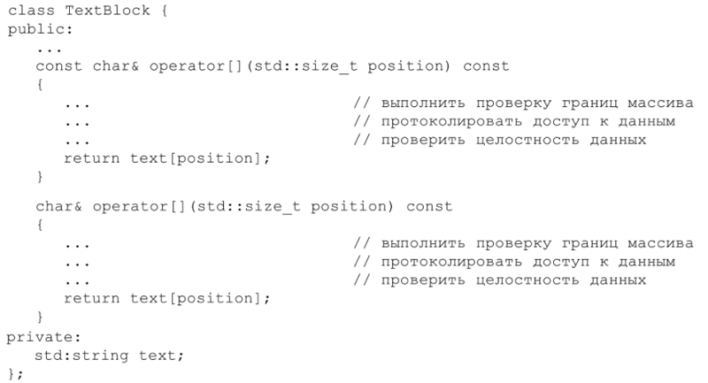Ох! Налицо все неприятности, связанные с дублированием кода: увеличение времени компиляции, размера программы и неудобство сопровождения. Конечно, можно переместить весь код для проверки выхода за границы массива и прочего в отдельную функцию-член (естественно, закрытую), которую будут вызывать обе версии operator[], но обращения к этой функции все же будут дублироваться.
В действительности было бы желательно реализовать функциональность operator[] один раз, а использовать в двух местах. То есть одна версия operator[] должна вызывать другую и это подводит нас к вопросу об отбрасывании константности
С самого начала отметим, отбрасывать константность нехорошо. Я посвятил целое правило 27 тому, чтобы убедить вас не делать этого, но дублирование кода - тоже не сахар. В данном случае константная версия operator[] делает в точности то же самое, что неконстантная, и отличие между ними – лишь в присутствии модификатора const. В этой ситуации отбрасывать const безопасно, поскольку Пользователь, вызывающий неконстантный operator, так или иначе должен получить неконстантный объект. Ведь в противном случае он не стал бы вызывать неконстантную функцию. Поэтому реализация неконстантного ореrаtоr[] путем вызова константной версии – это безопасный способ избежать дублирования кода, даже пусть даже для этого требуется воспользоваться оператором const_cast. Ниже приведен получающийся в результате код, но он станет яснее после того, как вы прочитаете следующие далее объяснения:
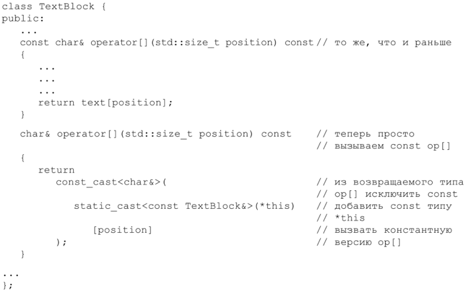Как видите, код включает два приведения, а не одно. Мы хотим, чтобы неконстантный operator[] вызывал константный, но если внутри неконстантного оператора [] просто вызовем operator[], то получится рекурсивный вызов. Во избежание бесконечной рекурсии нужно указать, что мы хотим вызвать соnѕt operatorl, но прямого способа сделать это не существует. Поэтому мы приводим *thiѕ от типа TextBlock & к const TextBlock&. Да, мы выполняем приведение, чтобы добавить константность! Таким образом, мы имеем два приведения: одно добавляет константность *this (чтобы был вызван const operator[]), а второе – исКлючает соnѕt из типа возвращаемого значения.
Приведение, которое добавляет соnѕt, выполняет безопасное преобразование (от неконстантного объекта к константному), поэтому мы используем Для этой цели static_cast. Приведение же, которое отбрасывает const, может быть выполнено только с помощью соnѕt_cast, поэтому у нас здесь нет выбора. (Строго говоря, выбор есть. Приведение в стиле С также работает, но, как я объясняю в правиле 27, такие приведения редко являются правильным рещением. Если вы не знакомы с операторами static cast или const cast, прочитайте о них в правиле 27.)
Помимо всего прочего, в этом примере мы вызываем оператор, поэтому синтаксис выглядит немного странно. Возможно, этот код не займет приз на конкурсе красоты, зато ПОЗВОЛяет достичь нужного эффекта – избежать дублирования посредством реализации неконстантной версии operator в терминах Константной. И хотя Для достижения цели пришлось воспользоваться неуклюжим синтаксисом, который сможете понять только вы сами, однако техника реализации неконстантных функций-членов через неконстантные определенно заслуживает того, чтобы ее знать.
А еще нужно иметь в виду, что решать эту задачу наоборот - путем вызова неконстантной версии из Константной – неправильно. Помните, что константная функция-член обещает никогда не изменять логическое состояние объекта, а неконстантная не дает таких гарантий. Если вы вызовете неконстантную функцию из константной, то рискуете получить ситуацию, когда объект, который не должен модифицироваться, будет изменен. Вот почему этого не следует делать: чтобы объект не изменился. Фактически, чтобы получить компилируемый код, вам пришлось бы использовать соnѕt саѕt для отбрасывания Константности *thiѕ, а это явный признак неудачного решения. Обратная последовательность вызовов – такая, как описана выше, – безопасна. Неконстантная функция-член может делать все, что захочет с объектом, поэтому вызов из нее константной функциичлена ничем не грозит. Потому-то мы и применяем к *this оператор static cast, отбрасывания Константности при этом не происходит.
Как я уже упоминал в начале этого правила, модификатор const — чудесная вещь. Для указателей и Итераторов; для объектов, на которые ссылаются указатели, итераторы и ссылки; для параметров функций и возвращаемых ими значений; для локальных переменных, для функций-членов – всюду соnѕt ваш мощный союзник. Используйте его, где только возможно. Вам понравится!
Что следует помнить
Правило 4: Прежде чем использовать объекты, убедитесь, что они инициализированы⇒